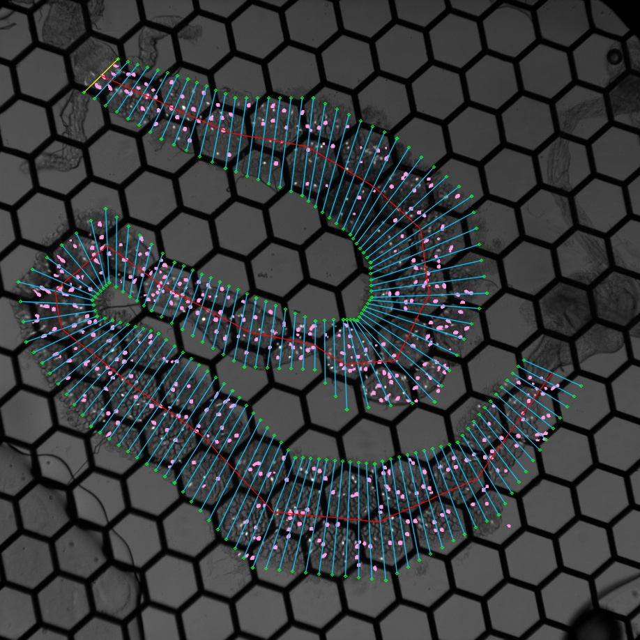

I built a data processing pipeline designed to automatically extract and analyze individual cell activity information from calcium imaging videos. The goal is to eliminate excessive manual effort and facilitate the study of biological questions related to enteroendocrine cells in the mid-gut of Drosophila melanogaster (fruit fly). While the pipeline is fine-tuned for this study, it has the potential to be applied to imaging videos of other tissues or animals.
This project can be divided into two main parts: extracting individual cell activities and further analysis of these activities.
Related Skills:
Publications:
A Nutrient-specific Gut Hormone Arbitrates Between Courtship and Feeding
Nature

A sample calcium imaging video recording of gut cells
Background Subtraction
Background noise can come from both the camera's intrinsic properties and the slightest ambient light. Background noise lowers the contrast between cell bodies and the background, making cell bodies more difficult to identify. To reduce background noise, I used the Rolling-Ball algorithm to subtract the background from the raw video. This algorithm has the advantage of taking into account the unevenness of the background. Also, it is a built-in feature in ImageJ Fiji.
To understand the rolling ball algorithm intuitively, imagine the 2D signal as a 3D contour surface, with the value at each position as its height. The calculated background is the trajectory of a ball rolling over the bottom of this surface. Mathematically, the algorithm is equivalent to eroding and dilating with a spherical structuring element [1]. The input of this morphological operation is the 3D contour mentioned above, and the result of this operation is the calculated background. Thus, the diameter of the ball should not be smaller than the signal and was determined to be 50 pixels empirically.
Before/After background subtraction
Cell Body Identification
Cells are identified via edge detection using a Laplacian filter. The filter was applied to the maximum projection along the time axis of the calcium imaging video. To ensure a region of interest (ROI) completely encloses a cell and to minimize residual movements not fully corrected by motion correction, an additional Gaussian blur filter was applied before the Laplacian filter.

Raw max projection/Gaussian filter/Identified ROI
Gut Region Specification
To obtain the spatial positions of each ROI, I developed a user interface to help assign each ROI an anterior-posterior coordinate in proportion to the entire length of the cell population. With the help of overlaying a bright field gut image, the user draws out the boundary of the gut, and the program automatically divides the gut into segments with the same pre-defined width.
A gut divided into segments (Cells indicated with pink ROIs)